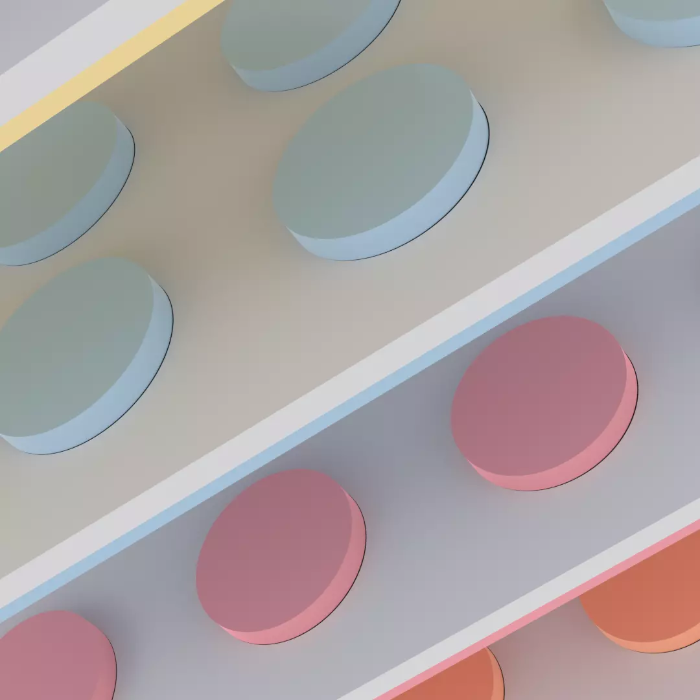
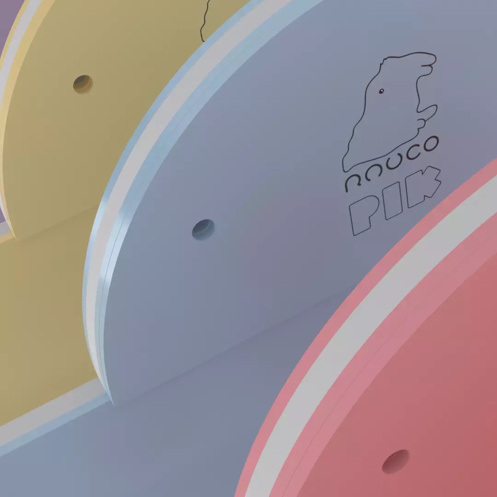
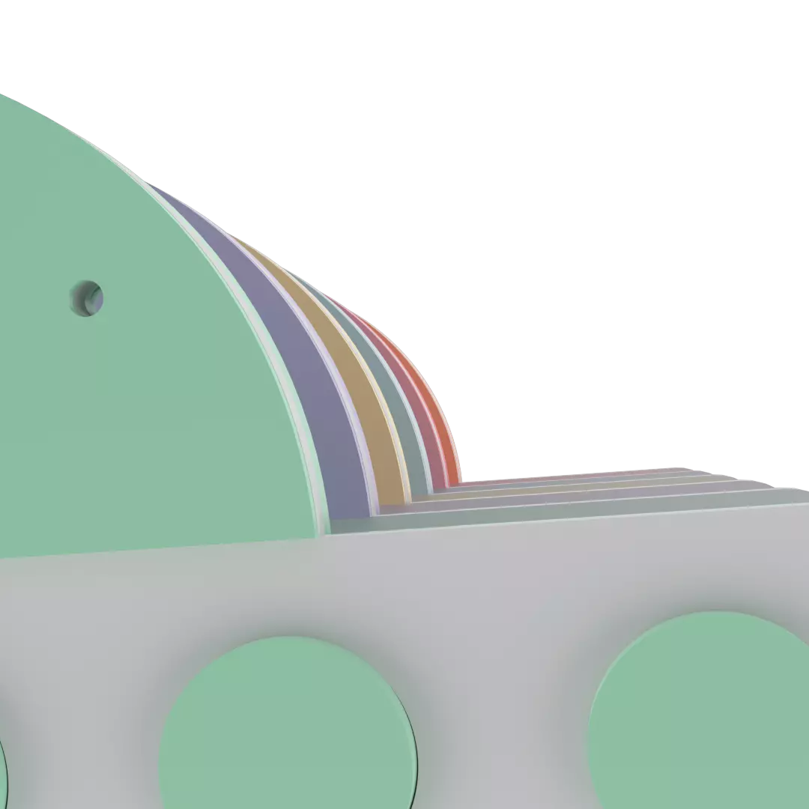

Are you looking for a MIDI controller
that has a top-notch performance and a cute design?
PIK is the world's first musical instrument to be entirely designed by artificial intelligence, and it represents a major step forward in the field of music technology PIK is designed with the latest technology, including Bluetooth connectivity with ultra low latency and a full range of exciting features. PIK come with a full range of MIDI controls, as well as integrated audio and video capabilities, so you can use your PIK with any type of music software.
The concept behind PIK is simple: to create a musical instrument that is able to adapt to the individual needs and preferences of each musician. Using advanced machine learning algorithms, PIK is able to analyze a musician's playing style and adapt its sound and response to match their unique needs
PIK is equipped with a wide range of sounds and effects, allowing musicians to create a wide range of music with just one instrument. From lush, atmospheric pads to punchy, percussive beats, PIK is capable of producing a wide range of sounds and styles, making it a versatile and powerful tool for any musician.
I recently test the PIK MIDI controller from Rauco Design, and I have to say that I am really impressed with it. The controller has a sleek design and a very intuitive interface. All of the controls are easy to access and use, and the software is really easy to get the hang of
Ableton Certified Trainer
This controller is perfect for professionals, and it has been an absolute godsend.The PIK is incredibly versatile and it is perfect for both live performance and studio recording
Producer
As a user with special needs, I am always on the lookout for products that can help make my life easier. The controller is very responsive and I was able to get the sound that I wanted with ease. Overall, I am very pleased with the PIK, has a great design, excellent performance, and it is very easy to use. Highly recommended!
Musician
This controller is incredibly versatile and can be used for any type of music. Overall, I am really pleased with the PIK MIDI controller. It is a great choice for anyone who is looking for a high-quality, reliable controller.
SAE Institute instructor
Look no further than Rauco Design, our MIDI controllers are the perfect solution for DJs, producers, and any digital music enthusiast.
At RaucoDesign, we understand the importance of having a MIDI controller that looks as good as it performs, that's why we offer a range of controllers which have been designed with both form and function in mind.
At Rauco Design, we believe that the future of digital music controllers is bright. Our controllers offer a unique combination of features and performance that will take your music experience to the next level.
So what are you waiting for? Get your hands on one of our controllers today and start exploring the amazing world of digital music.

Copyright © 2022 RAUCO DESIGN All rights reserved